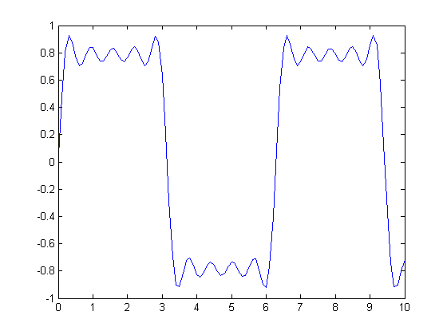
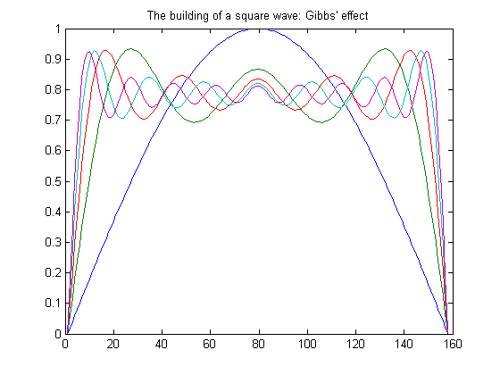

Square Wave from Sine Waves
The Fourier series expansion for a square-wave is made up of a sum of odd harmonics. We show this graphically using MATLAB®.
We start by forming a time vector running from 0 to 10 in steps of 0.1, and take the sine of all the points. Let's plot this fundamental frequency.
t = 0:.1:10; y = sin(t); plot(t,y);

Now add the third harmonic to the fundamental, and plot it.
y = sin(t) + sin(3*t)/3; plot(t,y);

Now use the first, third, fifth, seventh, and ninth harmonics.
y = sin(t) + sin(3*t)/3 + sin(5*t)/5 + sin(7*t)/7 + sin(9*t)/9; plot(t,y);
For a finale, we will go from the fundamental to the 19th harmonic, creating vectors of successively more harmonics, and saving all intermediate steps as the rows of a matrix.
These vectors are plotted on the same figure to show the evolution of the square wave. Note that Gibbs' effect says that it will never really get there.
t = 0:.02:3.14; y = zeros(10,length(t)); x = zeros(size(t)); for k=1:2:19 x = x + sin(k*t)/k; y((k+1)/2,:) = x; end plot(y(1:2:9,:)') title('The building of a square wave: Gibbs'' effect')
Here is a 3-D surface representing the gradual transformation of a sine wave into a square wave.
surf(y); shading interp axis off ij